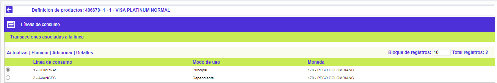
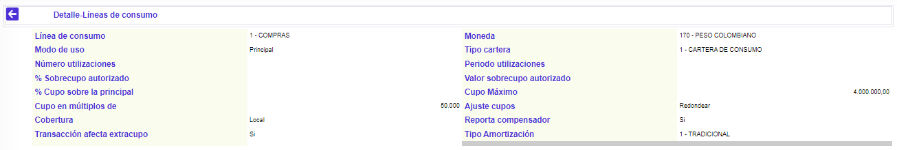
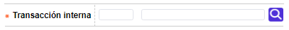

Definición de productos - Líneas de crédito
Esta opción que se invoca desde el formulario Definición de productos, le permite a la entidad adicionar o modificar la información correspondiente a las líneas de crédito del producto y las transacciones asociadas con cada una de ellas.

Esta opción tiene un hipervínculo Transacciones asociadas a la línea y un botón especial para Asociar todas las transacciones.
El formulario contiene los enlaces: Actualizar, Eliminar, Adicionar y Detalle.
Adicionar: si el usuario invoca la opción Adicionar se despliega un formulario con los siguientes campos.
Descripción de campos
Línea de crédito |
Campo obligatorio con lista de valores de la cual se puede seleccionar la línea de crédito principal del producto. |
Moneda |
Este campo obligatorio contiene lista de valores de la cual se selecciona la moneda en la cual se encuentra denominada la línea de crédito a adicionar al nuevo producto. |
Modo de uso |
Campo obligatorio tipo combo con las opciones Dependiente, Independiente, Especial y Principal para seleccionar el tipo de linea a asociar con el producto |
Tipo cartera |
Este campo obligatorio contiene lista de valores de donde se puede seleccionar el tipo de cartera al cual corresponde la línea de crédito asociada al nuevo producto, de acuerdo con las normas expedidas por el ente u organismo regulador. |
Número de utilizaciones |
Campo no obligatorio en el cual se registra el número de veces que la entidad permite utilizar la línea de crédito, en el lapso de tiempo específico definido en el siguiente campo. |
Periodo utilizaciones |
En este campo numérico no obligatorio se registra el número de periodos o facturaciones que se deben tener en cuenta al momento de validar el número de utilizaciones autorizadas por la entidad para la línea de crédito asociada al nuevo producto. |
Prioridad aplicación de pagos |
Campo numérico no obligatorio en el que se determina el orden o jerarquía asignado a la línea de crédito en caso de ser requerido de acuerdo con lo parametrizado por la entidad en la opción Prioridad aplicación de pagos. |
% Sobrecupo autorizado |
Este campo no obligatorio permite registrar el porcentaje calculado sobre el cupo de la línea asociada al nuevo producto, en que pueden excederse los consumos o utilizaciones efectuados. Es excluyente con el campo Valor sobrecupo autorizado |
Valor sobrecupo autorizado |
Campo mutuamente excluyente con el anterior y en el cual se indica el valor máximo en que pueden excederse los consumos o utilizaciones efectuados para la línea. Es un campo numérico de hasta 14 enteros y 2 decimales. |
Cupo en múltiplos de |
En este campo obligatorio tipo combo se indica la manera como se calculará y otorgará el cupo para la línea en el proceso de solicitud o asignación de los cupos para la misma. Al momento de asignarle valor a este campo se debe tener en cuenta la moneda en la cual está expresada la línea asociada al al nuevo producto por cuanto no es lo mismo asignarle y/o aumentarle a un cupo $10.000.00 que U$10.000.00. |
Ajuste cupos |
Campo obligatorio tipo combo en el cual se selecciona entre Truncar o Redondear, la manera en que el sistema debe hacer el ajuste de los cupos solicitados / asignados de acuerdo con el múltiplo indicado en el campo anterior.que indica la calificación externa de la tarjeta con la cual llegó la información procesada y registrada en la cuenta contable. |
Cupo máximo |
En este campo obligatorio de hasta 14 enteros y 2 decimales se registra el monto máximo que se le puede asignar como cupo a la línea asociada al nuevo producto. |
Cobertura |
Campo obligatorio tipo combo en el cual se selecciona entre Local o Internacional el uso permitido para la línea de crédito asociada al nuevo producto. |
Reporta compensador |
En este campo obligatorio tipo check se indica si dentro de los archivos de refresco enviados a las franquicias o compensadores se incluye o no el disponible de la línea; cuando no está marcado, significa que la entidad autoriza directamente las transacciones asociadas a la línea de crédito. |
Transacción afecta extracupo |
Campo obligatorio que indica si las transacciones asociadas a la línea de crédito afectan el extracupo de la tarjeta. |
Actualizar: si el usuario selecciona un registro e invoca la opción Actualizar, se despliega un formulario en el cual los únicos campos NO modificables son Línea de crédito , Moneda y Modo de uso.

Detalle: si el usuario selecciona un registro e invoca la opción Detalle, se despliega un formulario con toda la información del registro y en el cual ninguno de sus campos es modificable.

Transacciones asociadas a la línea: si el usuario selecciona una línea de crédito e invoca este hipervínulo, se despliega un formulario en el cual la entidad puede determinar las transacciones que se permite efectuar para cada una de las líneas asociadas al producto.
El formulario contiene los enlaces: Eliminar y Adicionar.
Adicionar: Al activar ese enlace se despliega un formulario con los siguientes campos.

Descripción de campos
|
Transacción interna |
Campo obligatorio con lista de valores de la cual se puede seleccionar la transacción interna que va a ser asociada con la línea de crédito. Desde el punto de vista práctico, son las transacciones que están permitidas o autorizadas por la entidad para la línea de crédito asociada con el nuevo producto. |
Botones especiales
Asociar todas las transacciones: si el usuario selecciona una línea de crédito y utiliza este botón especial, el sistema asociará a la línea de crédito todas las transacciones internas existentes en la base de datos y que actualmente no se encuentren asociadas a ninguna de las otras líneas que tenga el producto. Una vez ejecutado este proceso, el sistema no permite hacer la reversión automática y en grupo de dichas transacciones y en caso de errores, la depuración debe hacerse manualmente seleccionando una a una las diferentes transacciones asociadas y borrarlas mediante la opción Eliminar.